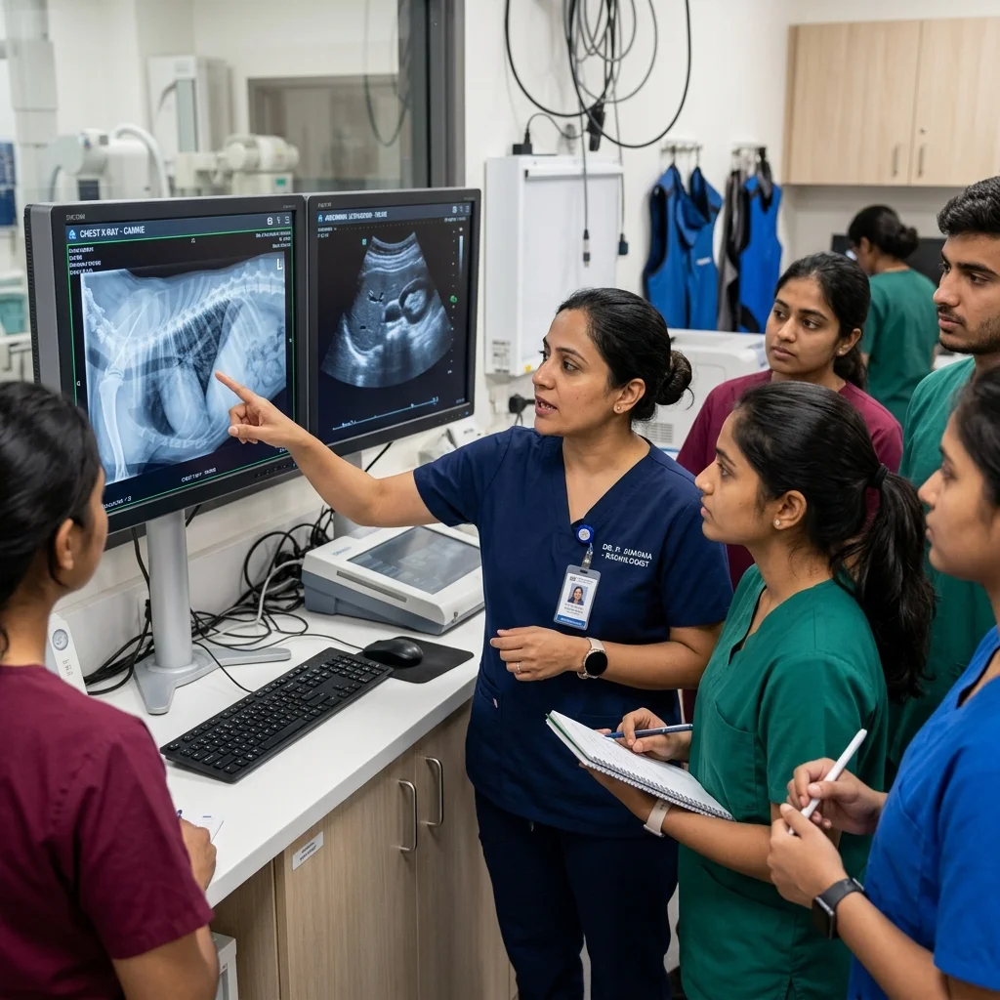
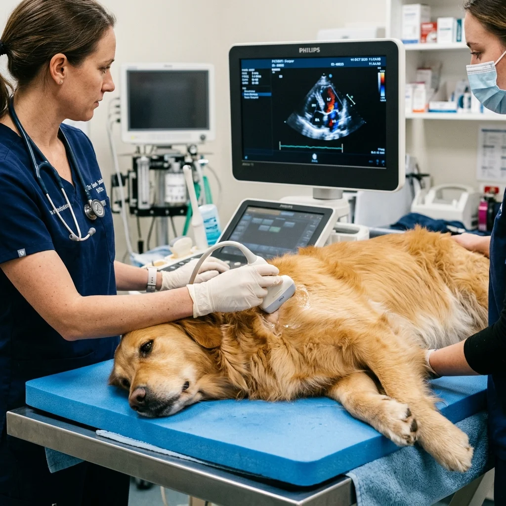

Radiology & Ultrasound Diagnostic Masterclass
Transform your clinical diagnostic accuracy through hands-on digital X-ray positioning, systematic radiograph interpretation, radiation safety compliance, and live abdominal ultrasound probe scanning.
- Digital Radiography & Orthogonal Positioning
- Thoracic & Abdominal X-Ray Interpretation
- Abdominal Ultrasound Transducer Handling
- AFAST & TFAST Emergency Fluid Scanning
- AERB Radiation Safety Compliance

📡 High-Res DR System 👨⚕️ Radiologist Mentors 🩺 Live Probe Handling ⭐ 4.9 Student RatingThe Diagnostic Uncertainty in Daily Practice
Why misinterpreting radiograph artifacts or struggling with ultrasound acoustic windows delays patient treatment.

From Blurry X-Rays to Clear Diagnostic Decisions
Diagnostic imaging is the backbone of small animal practice. However, many clinicians face daily imaging hurdles:
What You Will Achieve
Concrete practical imaging capabilities you will master by the end of this module.
Digital X-Ray Positioning
Position canine and feline patients perfectly for orthogonal thoracic, abdominal, and spinal views with minimal restraint stress.
Radiation Safety Compliance
Enforce lead apron/thyroid shield protocols, scatter radiation reduction, collimation, and AERB safety compliance in your clinic.
Thoracic & Cardiac Reading
Evaluate Vertebral Heart Score (VHS), pulmonary edema patterns, pneumothorax, and diaphragmatic hernia opacities.
Abdominal Ultrasound Scanning
Systematically examine the liver, gallbladder, spleen, kidneys, urinary bladder, gastrointestinal tract, and prostate.
Emergency AFAST & TFAST Scans
Perform rapid Abdominal & Thoracic Focused Assessment with Sonography for Trauma to detect free fluid and hemoperitoneum.
Imaging Certification
Receive an official VetNova Diagnostic Radiology & Ultrasonography Certificate validating 40 hours of practical imaging practice.
Explore Other Training Modules
Structured hands-on modules designed for BVSc interns, fresh graduates, practicing clinicians, and vet assistants.
Veterinary Skill-Up Program
4-Week comprehensive clinical mastery module covering soft tissue surgery, digital radiology reading, ultrasound scanning, and emergency triage.
Soft Tissue Surgery Track
Intensive hands-on procedural workshop covering sterile OR setup, tissue handling, suture patterns, spay/neuter, and intestinal cystotomy closures.
Radiology & Ultrasound Masterclass
Systematic abdominal & thoracic radiograph interpretation alongside hands-on abdominal ultrasound probe handling and FAST scanning.
Pet Emergency & Critical Care
Handling shock, toxic ingestion, cardiac arrest, fluid resuscitation, multiparameter vitals monitoring, and emergency patient triage.
Vet Nurse Foundation Certificate
Foundational practical training for clinic assistants and paravet staff covering animal restraint, surgical scrub support, catheter prep, and sanitization.
Pet Emergency First Aid Workshop
Designed for pet parents, rescuers, and animal lovers to stabilize pets during life-threatening choking, bleeding, or heat stroke emergencies.
Radiology & Ultrasound Syllabus
Step-by-step 1-week curriculum focusing on live machine handling and systematic image interpretation.
Digital Radiography Principles & Thoracic Reading
Mastering DR exposure parameters, orthogonal positioning, radiation protection gear, and thoracic radiograph interpretation.
- Digital X-Ray physics, kvp/mAs settings, and artifact recognition.
- Patient positioning: Right lateral, left lateral, ventrodorsal (VD), dorsoventral (DV).
- Thoracic reading: Cardiac size measurement (VHS), bronchial/vascular/interstitial lung patterns.
- Practical Lab: 10+ hours patient positioning and DICOM image viewer case reading.
Abdominal & Musculoskeletal Radiograph Interpretation
Systematic evaluation of gastrointestinal foreign bodies, organomegaly, uroliths, and orthopedic fracture patterns.
- Abdominal contrast studies, GI obstruction patterns, and free abdominal gas.
- Renal, bladder, and urethral calculus radiopacities.
- Musculoskeletal positioning: Joint dysplasia, bone fractures, and osteosarcoma signs.
- Practical Lab: Guided review of 200+ real clinical radiograph cases.
Ultrasound Knobology & Abdominal Scanning
Hands-on ultrasound transducer control, frequency adjustment, gain management, and systematic organ evaluation.
- Machine knobology: Frequency selection, focal zones, depth, and gain optimization.
- Organ scanning protocols: Liver parenchyma, gallbladder, spleen, left & right kidneys.
- Bladder wall thickness evaluation, prostate assessment, and pyometra identification.
- Practical Lab: Live machine scanning on patient models with mentor supervision.
Emergency AFAST & TFAST Protocols
High-speed emergency ultrasonography for rapid fluid detection in trauma and critical care patients.
- AFAST 4-site examination: Diaphragm-hepatic, splenorenal, cysto-colic, hepatorenal.
- TFAST thoracic acoustic windows: Pericardial site, chest tube site, lung gliding sign.
- Fluid scoring system for internal hemorrhage & cardiac tamponade assessment.
- Practical Lab: Simulated emergency trauma scan challenge and capstone assessment.
Imaging Workshop Delivery
Designed to give doctors direct machine time under specialist radiologist guidance.
Modern Imaging Suite
Equipped with high-frequency DR X-ray units, lead protection, and color Doppler ultrasound machines.
Max 10 Doctors per Batch
Strictly capped small batch sizes to ensure every trainee gets ample probe time.
500+ Case DICOM Library
Access our digital case library featuring rare radiograph opacities and ultrasound scans.
Radiologist Mentorship
Direct 1-on-1 feedback on transducer positioning and image reading from MVSc radiologists.
Who Should Join
Whether you are investing in a clinic ultrasound unit or upgrading your X-ray reading accuracy.
Final-Year BVSc Interns
Master diagnostic imaging reading before graduating to stand out to potential clinic employers.
Fresh Vet Graduates
Gain confidence in taking diagnostic X-rays and interpreting complex soft tissue cases.
Practicing Veterinarians
Incorporate abdominal ultrasonography into daily practice to offer in-house diagnostic scans.
Clinic Owners
Maximize return on clinic imaging equipment investments with standardized imaging protocols.
Meet Your Radiology Faculty
Learn directly from veterinary radiologist specialists with deep clinical scanning expertise.

Dr. Priya Sharma
BVSc & AH, MVSc (Radiology)Diagnostic Radiology & Abdominal Ultrasound Lead Trainer.

Dr. Amit Kulkarni
BVSc & AH, MVSc (Surgery)Surgical Radiography & Contrast Imaging Specialist.

Dr. Rajesh Verma
BVSc & AH, MVSc (Medicine)Emergency AFAST / TFAST Sonography Specialist.
Diagnostic Imaging Certification
Upon completing the 1-week course and practical scanning evaluation, graduates receive an official VetNova Certificate of Competency in Diagnostic Radiology & Ultrasonography.
Program Fee & Payment Options
All-inclusive course fee. Includes full access to DR X-ray units, ultrasound probes, and case library.
Radiology & Ultrasound Masterclass
1-Week Offline Diagnostic Imaging Workshop
- 30+ Hours live machine & probe access
- 500+ DICOM case study library access
- 1-on-1 Specialist radiologist guidance
- Verified course completion certificate
- Ongoing image reading helpline support
Imaging Workshop FAQs
Everything you need to know about machine availability, case material, and prerequisites.
No. We provide high-end color Doppler ultrasound machines during all practical lab sessions. Learning probe handling here will guide your future clinic machine purchase decision.
All trainees are equipped with AERB-certified lead aprons, thyroid shields, and lead gloves. Positioning is taught with positioning troughs and minimal manual holding.
The course focuses primarily on abdominal ultrasound and emergency TFAST cardiac screening. Basic cardiac acoustic windows are introduced during TFAST modules.
Yes, we partner with verified hostels and hotels located within 10 minutes of our Wagholi, Pune campus.
What Our Trainees Say
Hear from doctors who upgraded their diagnostic imaging accuracy with VetNova.
"I bought an ultrasound for my clinic last year but was hesitant to perform scans. The 1-week masterclass with Dr. Priya Sharma taught me systematic organ navigation and AFAST protocols. I now perform 3 to 4 diagnostic scans daily!"

Master Diagnostic Imaging Confidence
Join the upcoming Radiology & Ultrasound Masterclass batch and elevate your clinical diagnostic accuracy.